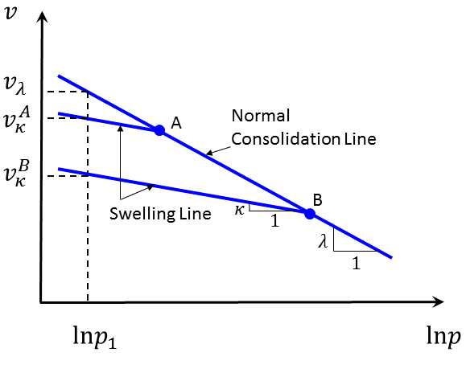
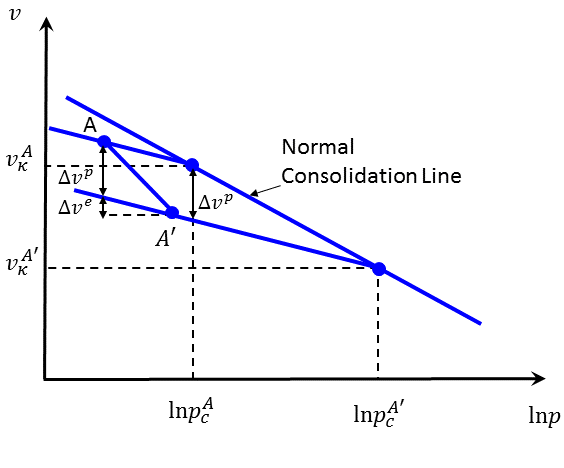
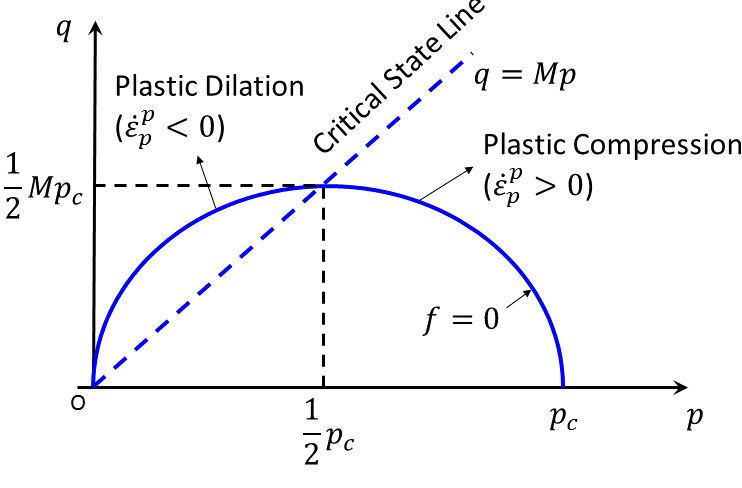
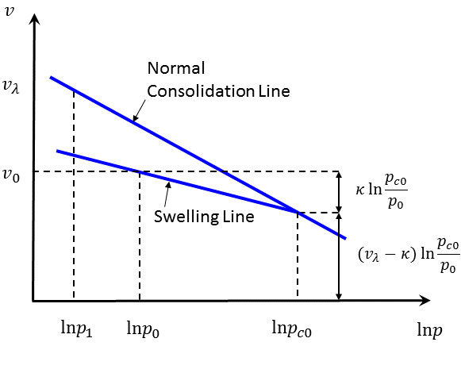

修正 Cam-Clay 模型
修正 Cam-Clay 模型是一种增量硬化/软化弹塑性模型，具有特定形式的非线性弹性，以及由塑性体积应变控制、即由“密度”驱动的硬化/软化行为。破坏包络面的形状保持自相似，在主应力空间中为绕平均应力轴旋转形成的椭球面。剪切流动法则为关联流动法则；该模型不能抵抗拉性的平均应力。关于修正 Cam-Clay 模型的详细论述，见 Roscoe 和 Burland（1968）及 Wood（1990）。为方便起见，下文省略“修正”这一限定词。还应注意，所有模型均以有效应力表示，特别是本节提及的所有压力均为有效压力。
公式
增量弹性定律
模型定义中使用的广义应力分量为平均有效压力 \(p\) 和偏应力 \(q\)，定义如下：
其中采用爱因斯坦求和约定，\(J_2\) 为有效偏应力张量 \([s]\) 的第二不变量：
与 \(p\) 和 \(q\) 对应的应变增量变量分别为体积应变增量 \(\Delta \epsilon_p\) 和剪应变增量 \(\Delta \epsilon_q\)，满足
其中，\(\Delta J_2'\) 表示偏应变增量张量 \(\Delta [e]\) 的第二不变量：
在塑性流动公式中，假定塑性和弹性主应变增量向量均与当前主应力向量共轴。随后将广义应变增量分解为弹性部分和塑性部分，满足
演化参数为比体积 \(v\)，其定义为
其中，\(V_s\) 为体积为 \(V\) 的土体所包含的固体颗粒体积，假定固体颗粒不可压缩。体积应变 \(\epsilon_p\) 与比体积之间的增量关系为
本步新的比体积 \(v^N\) 可计算为
用广义应力和应变表示的胡克定律增量形式为
其中，\(\Delta q = \sqrt{3 \Delta J_2}\)，\(\Delta J_2\) 表示偏应力增量张量的第二不变量：
在 Cam-Clay 模型中，体积关系式 (9) 中的切线体积模量 \(K\) 会进行更新，以体现通过各向同性压缩试验得到的非线性规律。典型各向同性压缩试验的结果见图 1（Figure 1）的半对数图。


图 1：各向同性压缩试验的正常固结线和卸载—再加载回弹线。
随着正常固结压力 \(p\) 增大，材料的比体积 \(v\) 减小。代表材料状态的点沿正常固结线移动，该线由以下方程定义：
其中，\(\lambda\) 定义为正常固结线的斜率，不应与塑性修正（plastic correction）部分流动法则中的塑性体积乘子 \({\lambda}^v\) 混淆；\(v_{\lambda}\) 为两个材料参数，\(p_1\) 为参考压力。请注意，\(v_{\lambda}\) 是参考压力 \(p_1\) 对应的比体积，典型取值为 \(p_1 = 1\) kPa。
从图中的点 \(A\) 或 \(B\) 进行卸载—再加载时，状态点沿斜率为 \(\kappa\) 的弹性回弹线移动，返回正常固结线后，再沿该线继续发展。回弹线的方程形式为
其中，\(\kappa\) 为材料常数；某条回弹线的 \(v_{\kappa}\) 值，取决于卸载起点在正常固结线上的位置。例如，在图 1（Figure 1）中，从点 \(A\) 卸载时为 \(v_{\kappa}^A\)，从点 \(B\) 卸载时为 \(v_{\kappa}^B\)。
对式 (12) 微分，可将比体积的可恢复变化 \(\Delta v^e\) 表示为以下增量形式：
将等式两侧除以 \(v\)，并利用式 (7)：
Cam-Clay 模型假定，平均压力的任何变化都会按照上述关系引起弹性体积变化。因此，与式 (9) 比较，可得 Cam-Clay 材料切线体积模量的以下表达式：
在更一般的加载条件下，介质中某一点的状态，可以表示为 \((v,\ln p)\) 平面内位于正常固结线下方的点，例如 \(A\)，见图 2（Figure 2）。根据式 (12) 采用的规律，从该点出发的弹性路径沿经过 \(A\) 的回弹线发展。


图 2：固结压力增量变化对应的塑性体积变化。
回弹线与正常固结线交点处的比体积和平均压力，分别称为正常固结比体积和正常固结压力；对于点 \(A\)，二者分别为 \(v_c^A\) 和 \(p_c^A\)。考虑一次使状态点从 \(A\) 移动到 \(A'\) 的应力增量。在 \(A'\) 处，存在对应的固结比体积 \(v_c^{A'}\) 和固结压力 \(p_c^{A'}\)。塑性体积变化增量 \(\Delta v^p\) 在图中表现为与点 \(A\) 和 \(A'\) 对应的两条回弹线之间的竖直距离。采用增量记号，可写为
将等式两侧除以 \(v\)，再与式 (7) 比较，得到
因此，只要平均压力发生变化，就会发生弹性体积变化；而塑性体积变化仅在固结压力改变时发生。
屈服函数与势函数
对应于某一固结压力值 \(p_c\) 的屈服函数形式为
其中，\(M\) 为材料常数。屈服条件 \(f\) = 0 在 \((q,p)\) 平面上表示为一个椭圆，水平轴为 \(p_c\)，竖直轴为 \(Mp_c\)，见图 3（Figure 3）。请注意，该椭圆经过原点，因此本模型中的材料不能承受全方向的拉应力。
破坏准则在主应力空间中表现为绕平均应力轴旋转形成的椭球面；在有效平均应力 \(p\) 恒定的条件下，屈服面的任意截面均为圆形。
势函数 \(g\) 对应关联流动法则，因此有


图 3：FLAC3D 中的 Cam-Clay 破坏准则。
塑性修正
描述塑性流动的流动法则形式为
其中，\(\lambda^v\) 为塑性体积乘子，其大小有待确定。
将式 (19) 代入 \(g\)，再对这些表达式求偏导，得到：
其中
由式 (3) 可将弹性应变增量表示为总应变增量减去塑性应变增量。再利用式 (21)，式 (19) 中的弹性定律变为
分别用上标 \(N\) 和 \(O\) 表示新、旧应力状态。按定义，对于一个计算步，有：
代入式 (23)，得到
其中，上标 \(I\) 表示将弹性应力增量加到旧应力上得到的弹性试算值；弹性增量使用总应变增量计算：
现在可以通过要求新应力点位于屈服面上来确定参数 \(\lambda^v\)。将式 (25) 给出的 \(p^N\) 和 \(q^N\) 分别代替 \(f(q,p)\) = 0 中的 \(p\) 和 \(q\)，经过整理，见式 (18)，得到
其中
应保留该方程两个根中绝对值较小的那个。
请注意，在图 3（Figure 3）中与 \(p_{cr} = p_c/2\)、\(q_{cr} = M p_c/2\) 对应的临界点处，屈服曲线 \(f\) = 0 的法线平行于 \(q\) 轴。由于采用关联流动法则，该处的塑性体积应变率分量为零。按照硬化法则，即式 (17)，固结压力 \(p_c\) 将不再变化。相应材料点已经达到临界状态，此时可以产生无限的剪应变，而比体积及应力水平保持不变。
利用以下表达式，以新旧广义应力值表示新的应力分量 \(\sigma_{ij}^N\)：
其中
其中，\([s]\) 为偏应力张量。
硬化/软化法则
屈服曲线的大小取决于固结压力 \(p_c\) 的值，见式 (18)。该压力是塑性体积变化的函数，并按式 (17) 所示随比体积变化。本步的固结压力按以下公式更新：
其中，\(\Delta \epsilon_p^p\) 为该步的塑性体积应变增量，\(v\) 为当前比体积，\(\lambda\) 和 \(\kappa\) 为前述式 (11) 中的材料参数。
初始应力状态
FLAC3D 或 3DEC 中的 Cam-Clay 模型，仅适用于应力状态对应压缩平均有效应力的材料。本模型并非用于预测不满足这一条件的材料行为。特别是，材料的初始状态，即刚开始采用 Cam-Clay 模型之前的状态，必须满足此要求。初始应力状态可以通过 zone initialize 命令指定，也可以来自先前使用其他本构模型的计算结果。如果将 Cam-Clay 模型应用于初始有效压力 \(p_0\) 为负的网格单元，程序会发出错误消息。
超固结比
超固结比 \(R\) 定义为网格单元的初始先期固结压力，即一项材料属性，与初始压力 \(p_0\) 的比值：
该比值可用于表征 Cam-Clay 材料的行为。
实现步骤
在 FLAC3D/3DEC 的 Cam-Clay 模型实现中，首先将由胡克定律和本步总应变增量求出的应力增量加到旧应力分量上，得到弹性试算值 \(\sigma_{ij}^I\)。
使用式 (1) 计算平均压力 \(p^I\) 和偏应力 \(q^I\) 的弹性试算值。如果这些应力违反屈服准则，且 \(f(q^I,p^I) >\) 0，见式 (18)，就会发生塑性变形，并需要更新固结压力。此时，必须修正弹性试算值，以得到新的应力状态。首先，取式 (27) 和 (28) 中绝对值较小的根对应的 \(\lambda\) 表达式，代入式 (25)，求出新应力 \(p^N\) 和 \(q^N\)。请注意，在此版本程序中，式 (22) 中的 \(c_a\) 和 \(c_b\) 使用弹性试算值计算；只要步长足够小，这种处理带来的误差预计也很小。随后，使用式 (29) 和 (30)，计算参考坐标系中的新应力张量分量。
网格单元的体积应变增量 \(\Delta \epsilon_p\) 和平均压力 \(p\)，通过对相关的所有四面体取平均值计算，见式 (1) 和 (3)。随后增加网格单元的体积应变 \(\epsilon_p\)，并使用式 (8) 更新网格单元比体积 \(v\)。再通过式 (31) 计算新的网格单元固结压力，并按式 (15) 更新切线体积模量。
如果泊松比属性指定为非零值，则根据表达式 \(G = 1.5(1-2 \nu) K / (1+\nu)\) 计算新的剪切模量。否则，只要满足条件 \(0 \leq \nu \leq\) 0.5，就保持 \(G\) 不变；若不满足，则根据具体情况将 \(G\) 赋为 \(\nu\) = 0 或 \(\nu\) = 0.5。
随后存储新的固结压力、剪切模量和体积模量，供下一时间步使用。因此，材料属性会比相应计算滞后一个时间步。对于显式程序，由于计算步长很小，这一误差也很小。
输入参数的确定
摩擦常数 M——\(M\) 是临界状态线上 \(q/p_{cr}\) 的比值。因此，可以通过一系列三轴试验确定该常数，试验可以是排水试验，也可以是测量孔隙水压力的不排水试验。试验应达到大应变，以确保 \(p_{cr}\) 和 \(q\) 的最终值接近临界状态线。在 \(q\) 与 \(p_{cr}\) 关系图中，最佳拟合直线的斜率即为参数 \(M\)。
\(M\) 与 Mohr-Coulomb 屈服函数的有效应力摩擦角 \(\phi'\) 有关。但 Cam-Clay 临界状态线取决于中间主应力 \(\sigma_2\)，而 Mohr-Coulomb 不依赖该应力，因此屈服时 \(\sigma_2\) 的不同取值，会导致 \(M\) 与 \(\phi'\) 之间具有不同关系。这类似于 Mohr-Coulomb 与 Drucker-Prager 屈服函数之间的关系。对于三轴压缩试验，
而对于三轴伸长试验，
正常固结线与回弹线的斜率（\(\lambda\)和\(\kappa\)）——理想情况下，应通过带有多次卸载过程的各向同性加载三轴试验，即 \(q\) = 0，确定这两个参数。在 \(v\) 与 \(\ln p\) 关系图中，正常压缩线的斜率即为参数 \(\lambda\)；同一图中卸载路径的斜率即为参数 \(\kappa\)。
在作出一定假设后，也可以通过固结仪试验确定这两个参数。设 \(\sigma_v\) 和 \(\sigma_H\) 分别为固结仪试验中的竖向和水平应力。大多数固结仪无法测量水平应力 \(\sigma_H\)，因此平均应力 \(p = (\sigma_v + 2\sigma_H)/3\) 未知。不过，试验数据表明，正常压缩过程中水平与竖向有效应力之比 \(K_0\) 保持恒定。由于正常压缩线上满足 \(p = \sigma_v (1 + 2K_0)/3\)，所以 \(v\) 与 \(\ln p\) 关系图的斜率等于 \(e\) 与 \(\ln \sigma_v\) 关系图的斜率，其中孔隙比 \(e = v - 1\)。
压缩指数 \(C_c\) 由 \(e\) 与 \(\log_{10} (\sigma_v)\) 关系图的斜率计算。因此，参数 \(\lambda\) 为
试验数据表明，在固结仪试验的回弹线上，\(K_0\) 并不恒定。因此，基于回弹系数 \(C_s\) 得到的 \(\kappa\) 估计值只能是近似值。
实际使用时，通常将 \(\kappa\) 取为 \(\lambda\) 的 1/5 至 1/3。
正常固结线在 \(v\) 与 \(\ln p\) 关系图中的位置——要确定正常固结线在 \(v\) 与 \(\ln p\) 关系图中的位置，必须指定该线上的一个点（\((v_{\lambda}\)，\(\ln p_1)\)）。最直接的方法是进行各向同性三轴试验。也可以根据不排水抗剪强度确定该点，详见 Britto 和 Gunn（1987）。
正常固结线的方程为 \(v = v_{\lambda} - \lambda \ln {{p}/{p_1}}\)，另见式 (11)。
当 \(p = p_1\) 时，临界状态线上的比体积截距 \(\Gamma\) 可由以下关系给出（Wood，1990）：
土体的不排水抗剪强度 \(c_u\) 与比体积 \(v_{cr}\) 之间存在唯一关系，可由以下方程表示：
因此，只要已知某一比体积 \(v_{cr}\) 对应的不排水抗剪强度，以及参数 \(M\)、\(\lambda\) 和 \(\kappa\)，就能计算给定 \(p_1\) 时的 \(\Gamma\)，进而求出 \(v_{\lambda}\)。
先期固结压力 \(p_{c0}\)——先期固结压力决定下式中屈服面的初始大小：
如果试样经历过各向同性加载路径，\(p_{c0}\) 就是历史最大平均有效应力。如果试样经历了其他非各向同性路径，则必须根据历史最大 \(p\) 和 \(q\)，利用式 (39) 计算 \(p_{c0}\)。
可以通过固结仪试验，采用 Casagrande 方法计算最大竖向有效应力，详见 Britto 和 Gunn（1987）。对于最大水平有效应力，需要作出某种假设。常用的假设是 Jaky 关系式：
其中，\(K_{nc}\) 为正常固结土静止状态下水平应力 \((\sigma_{h\max})\) 与竖向应力 \(\sigma_{v\max}\) 的比值。例如，某土体的有效摩擦角为 20°，曾经承受的最大竖向有效应力为 \(\sigma_{v\max}\) = 1 MPa。采用 Jaky 关系式，得到
最大水平应力为
\(p\) 和 \(q\) 的最大值为
将这两个值代入屈服函数，即式 (18)，可得先期固结压力：
比体积的初始值 \(v_{0}\) 与体积模量的初始值 \(K\)——给定初始有效压力 \(p_0\) 后，初始比体积 \(v_0\) 必须与所选参数 \(\kappa, \lambda, p_1\) 和 \(p_{c0}\) 相容。初始值 \(v_0\) 按以下方式计算：取正常固结线上满足 \(p = p_{c0}\) 的点，通过该点作回弹线，计算这条回弹线上与 \(p_0\) 对应的比体积。由图 4（Figure 4） 可得


图 4：初始比体积的确定。
随后可使用式 (15) 估算体积模量的初始值 \(K\)，得到
在 FLAC3D/3DEC 中，首次发出步进命令时，会通过式 (42) 和 (43) 计算属性 \(v_{0}\) 和 \(K\) 的默认值。
请注意，在开始使用 Cam-Clay 模型进行步进计算之前，必须按照初始应力状态初始化平均有效压力 \(p\)。可以使用 FISH 函数完成这一操作，例如各向同性固结示例（isotropic consolidation example）中的函数。
弹性参数的最大值 \(K\) 和 \(G\)——在 Cam-Clay 模型中，体积模量 \(K\) 随比体积和平均应力变化：
FLAC3D/3DEC 在质量缩放计算中使用 \(K_{max}\) 和 \(G\) 的输入值，以保证数值稳定性。每次发出 执行计算时步命令（model step） 命令时，都会进行一次该计算。所选输入值应能给出模型在相邻两次 执行计算时步命令（model step） 命令之间计算所得的 \((K + 4/3 G)\) 之和的上限。但这些值也不应设得过大，否则模型可能收敛缓慢。应根据问题中的应力水平进行选择。
\(G\) 或 \(\nu\)——FLAC3D/3DEC 中的修正 Cam-Clay 模型允许用户指定恒定剪切模量或恒定泊松比。
如果未指定泊松比，则假定剪切模量保持为输入的常数值。此时，泊松比将随比体积和平均应力变化：
如果指定了非零泊松比，剪切模量就会与体积模量按相同的比率变化，以保持泊松比恒定：
双屈服模型与修正 Cam-Clay 模型的比较汇总见此处（here）。
参考文献
Wood, D.M. Soil Behaviour and Critical State Soil Mechanics（土的行为与临界状态土力学）. Cambridge: Cambridge University Press（1990）。
Roscoe K.H., and J. B. Burland. “On the Generalised Stress-Strain Behavior of ‘Wet Clay’”（论“湿黏土”的广义应力—应变行为），载于 Engineering Plasticity，第 535–609 页。J. Heyman 和 F. A. Leckie 编。Cambridge: Cambridge University Press（1968）。
modified-cam-clay 模型性质
使用以下关键字，配合 设置网格单元属性（zone property）（FLAC3D）或 设置块体网格单元属性（block zone property）（3DEC）命令，设置修正 Cam-Clay 模型的这些属性。
- modified-cam-clay
- bulk-maximum f
最大弹性体积模量，\(K_{max}\)
- kappa f
弹性回弹线的斜率，\(\kappa\)
- lambda f
正常固结线的斜率，\(\lambda\)
- poisson f
泊松比，\(\nu\)
- pressure-reference f
参考压力，\(p_1\)
- pressure-effective f
平均有效应力，\(p\)；由于该模型与压力有关，必须指定此值。
- pressure-preconsolidation f
先期固结压力，\(p_{c0}\)
- ratio-critical-state f
临界状态应力比，即临界状态时的 \(M = q/p\)
- shear f
弹性剪切模量，\(G\)
- specific-volume-reference f
正常固结线上参考压力 \(p_1\) 对应的比体积，\(v_{\lambda}\)
- bulk f (r)
当前弹性体积模量，\(K\)
- specific-volume f (r)
当前比体积，\(v\)；在程序内部初始化或更新。
- strain-volumetric-total f (r)
累计总体积应变
- stress-deviatoric f (r)
当前偏应力，\(q\)
图例
- (r) 只读属性。
- 该属性不能由用户设置，但可以列出、绘图显示，或通过 FISH 访问。
注意事项
- 如果当前体积模量 \(K\) 大于 \(K_{max}\)，错误消息会建议增大 \(K_{max}\)。
- 泊松比 \(\nu\) 与剪切模量 \(G\) 只需输入其中之一。如果未指定 \(\nu\)，而指定了非零的 \(G\)，则 \(G\) 保持不变，\(\nu\) 随 \(K\) 变化。如果给出非零的 \(\nu\)，则 \(G\) 随 \(K\) 变化，而 \(\nu\) 保持不变。
| 这些内容对您有帮助吗？… | FLAC3D © 2019, Itasca | 原文更新于 2020 年 10 月 8 日 |
| 版权与免责声明 | ||